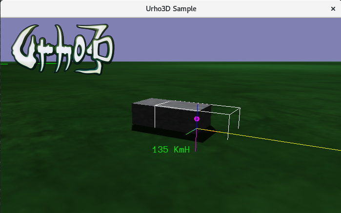

extobias
Hi, there
I’m doing a simple physics test with a RigidBody, applying an impulse on forward direction.
I used 19_VehicleDemo sample to implemented. Does anyone have any hint about why is going on?
I am aware that there is already a vehicle implemented with raycast. but I’m doing these tests to better understand how it works.
Thanks
